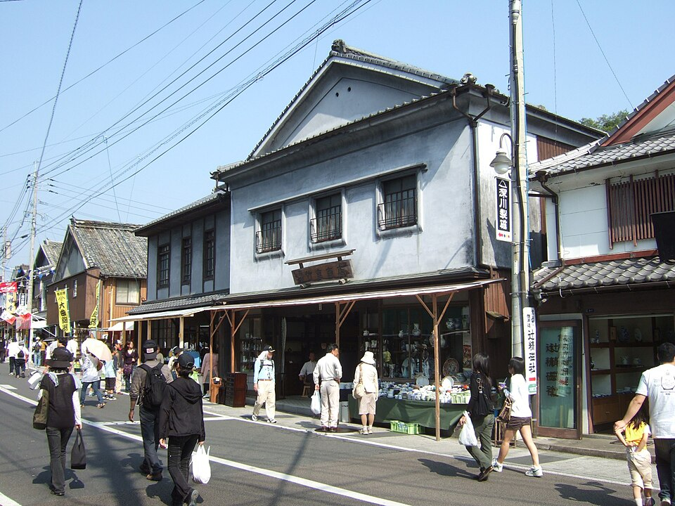
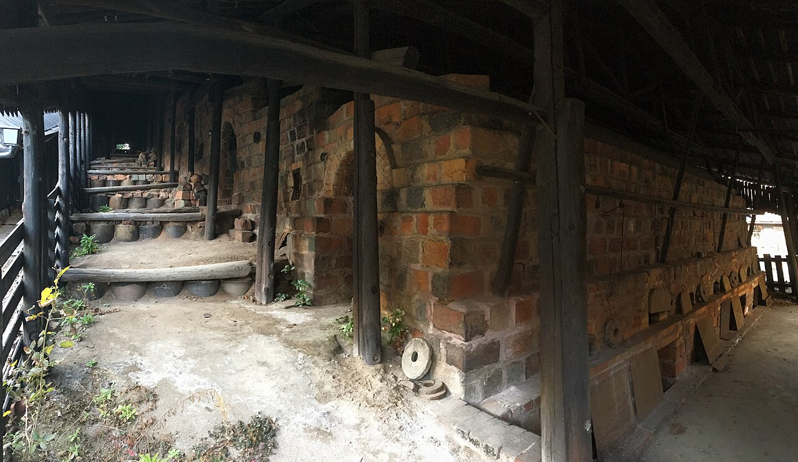

第三十八回瀬戸ノ口陶器市
五月三日・四日 窯元四十一軒
地図の番号を押してください

出店する窯元 41軒
番号は地図の番号。値段は各窯元の一番安い器の目安です。「回る」を押すと、駅から歩く順に並べ直します。
2日間の催しと時刻
登り窯の窯出しは3日の朝だけ。4日は15時に閉め、14時半から一部の窯元が値下げをします。雨の日に変わる催しは朱で書いています。

電車・車での行き方と駐車場
昨年は3日の10時40分から13時10分まで P1 が満車でした。車は10時前か、午後遅めに。
| 駐車場 | 台数 | 会場まで |
|---|---|---|
| P1 運動公園 | 420台 | シャトルバス 6分（12分おき・無料） |
| P2 町役場 | 85台 | 歩いて4分。車いす・ベビーカーの人を優先 |
| P3 旧JA倉庫跡 | 160台 | 歩いて9分 |
協力金は1日500円（P1〜P3 共通）。会場のまわりの道は2日とも8:00〜17:00 車が入れません。買った器は駅前の本部で家まで送れます（送料は大きさと地域で変わります）。駅のコインロッカーは12個だけです。
雨の日の開催と会場の変更
判断は各日 6:30。このページの上の黒い帯と、登録した人へのメールでお知らせします。電話は7:00から。
| 天気 | どうなるか |
|---|---|
| 小雨・曇り | 開催。地図のとおり |
| 雨が続く | 開催（一部変更）。C・D・E を屋内へ。窯出し・小径歩きは中止 |
| 町に大雨・暴風の警報 | 中止。翌日の開催はその日の 6:30 に判断 |
| 変わること | くわしく |
|---|---|
| 窯元の場所 | C・D の17軒は旧瀬戸ノ口小の体育館（入口で靴袋を配ります）、E の4軒は公民館へ。A・B の20軒はそのまま |
| バスと体験 | シャトルバスは8分おきに。絵付け・箸置きづくりは公民館の和室で |
| 持ち帰り | 各窯元が新聞紙で包みます。本部で大きなビニール袋を1枚10円で |
前日の夕方と当日 6:30 にメールで知らせる
雨の日の判断、駐車場の混み具合、窯出しの時刻がずれたとき。2日間と前の日だけ、多くて4通です。